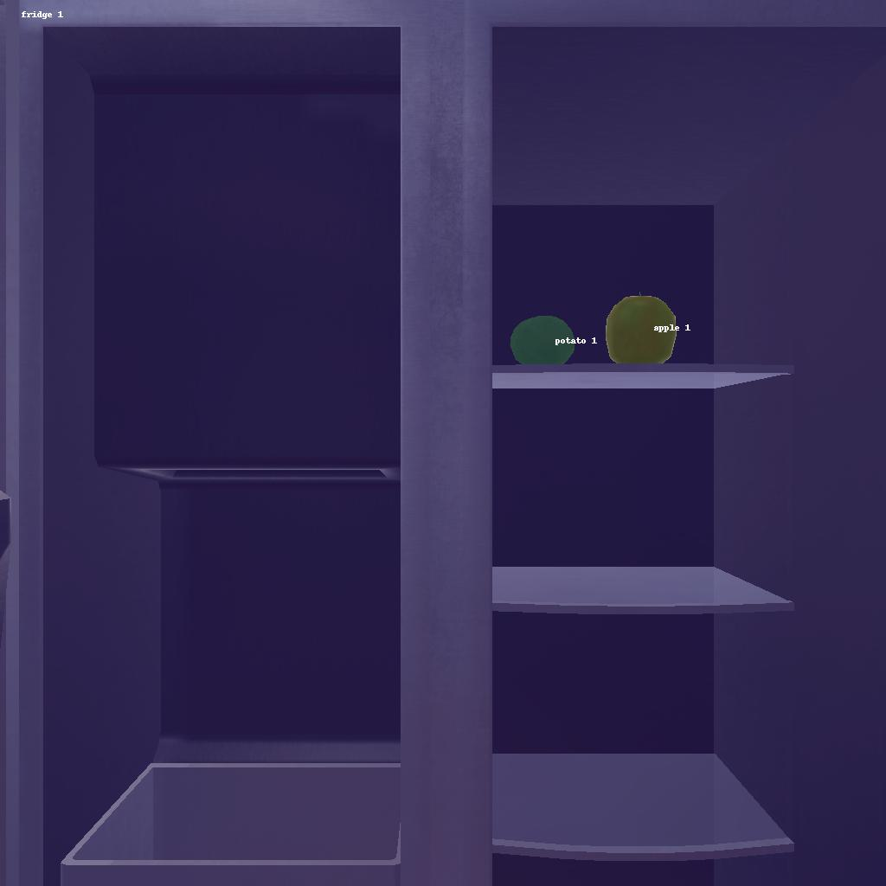

---------------------------------------------------------task: 12---------------------------------------------------------
--------------------------------------------------------------------------------------------------------------------------------------------------------------------
--------------------------------------------------------------------------------------------------------------------------------------------------------------------
Step:--------------------------------------------------------------------------16-------------------------------------------------------------------------------
----------------------------------------
VLM Prompt:
Image1:
**Instruction**
1. Analyze the provided image to identify all visible household objects, focusing on those relevant to the task description "clean some tomato and put it in countertop."
2. Use the analysis of the image and the task hint "The agent must find an object of the desired type, pick it up, go to a sink or a basin, clean the object with a sink or basin, and then find the correct location to place it and put it down there. The agent does not need to use soap bottle or faucet to clean the object, and the agent just needs to do action that is "clean the object with the sink or sink basin"." to answer the question: what is the most reasonable action in the choices for the task description "clean some tomato and put it in countertop"?
4. Decide and write the answer using the template: The answer is: (i): , where i is the real number. If there is no desired object in the image, search every place based on **Initial Observation** to find the object. And if no one is exactly correct, choose a similar answer.
**Initial Observation**
You are in the middle of a room. Looking quickly around you, you can see cabinet (1-6), microwave (1), countertop (1-2), coffeemachine (1), toaster (1), sink (1), sinkbasin (1), fridge (1)
**Answer Choices**
(1): go to cabinet 2
(2): go to cabinet 3
(3): go to microwave 1
(4): go to cabinet 4
(5): go to cabinet 5
(6): go to cabinet 6
(7): go to countertop 1
(8): go to coffeemachine 1
(9): go to toaster 1
(10): go to countertop 2
(11): go to sink 1
(12): go to sinkbasin 1
(13): open fridge 1
(14): close fridge 1
(15): take apple 1 from fridge 1
(16): take potato 1 from fridge 1
(17): examine fridge 1
**Answer**
Let's think step by step by following the instructions.
----------------------------------------
----------------------------------------
Original Response:
The task description is to "clean some tomato and put it in countertop." From the image provided, we can see the inside of a fridge with a potato and an apple. There is no tomato visible in the image.
Based on the initial observation, there are several cabinets, a microwave, countertops, a coffee machine, a toaster, a sink, a sink basin, and the fridge. To find a tomato, we need to search the places where a tomato is likely to be stored, which could be the fridge or cabinets.
Since the image only shows the inside of the fridge and there is no tomato there, the next reasonable action would be to search the cabinets. None of the answer choices directly mention searching for a tomato, so we have to choose the action that involves searching for the object.
The answer is: (1): go to cabinet 2
----------------------------------------
----------------------------------------
>>> Refine Original VLM Response and Get Pure Action: go to cabinet 2
----------------------------------------
-----------------------------------------------------------------
Running time: 8.315640449523926 seconds
Total Money: 3.9992200000000007
-----------------------------------------------------------------
-----------------------------------------------------------------
Text Observation:You arrive at loc 1. The cabinet 2 is closed.
-----------------------------------------------------------------
UNSUCCEED